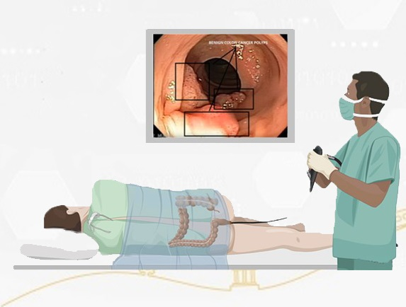

COLORECTAL CANCER AI
USING ARTIFICIAL INTELLIGENCE METHODS TO DETECT POLLYPS DURING
LIVE COLLORECTAL EXPLORATIONS AND MALIGNANCY DETECTION
USING ADVANCED ALGORITHMS
Colorectal cancer is among world's deadliest diseases in the world. Its location makes it difficult to develop tools in order to find it at early stages, but we can help by increasing the accuracy of traditional methods, including explorations. Cameras will be equipped with an artificial intelligence chip able to run a prebuild model to detect pollyps and cancerous forms live during explorations and provide a prediction of the malignancy level based on the morphological features characteristic of both tumor types, benign and malignant.
TOOL AVAILABLE SOON...
